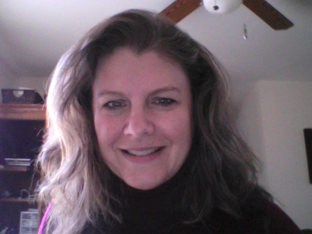

About Me
I graduated from Rutgers University in 1986 with a Degree in Comp Sci. and later went on to complete my masters in Comp Sci at FDU. I have several different interests that keep me busy in addition to taking care of my home and family. Although, after starting this class most of these are on the back burner.
Sports - I enjoy watching my children play their favorite sports. I also like to play sports as well. For me it's softball and tennis. My daughters like soccer and softball and basketball..
Music - I have always loved to listen and even play music. I played the sax in high school and even in the marching band at Rutgers. My favorite music genres are Alternative, Rock and Jazz but I like all types of music.
Health & Fitness - I feel as if the daily grind we are all being put through is truly a detriment to our health. Including brain health! I am really interested in the brain and the reasearch is fun to read about.